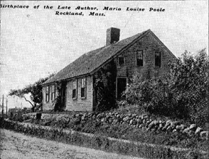
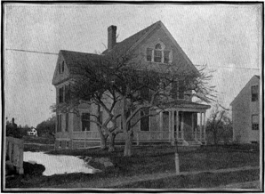
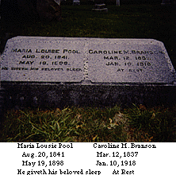

"Tenting at Stony Beach" - The complete novel.
It is always pleasant to dwell upon a literary career, unpretentious, not stimulated by greed, nor coddled by fulsome flatteries, - a career so simple, so sincere, so honest, so generous, as that of Maria Louise Pool. Her life began in the little Massachusetts town of Rockland, within ten miles of the coast, when the century was but little more than two-score years old, and ended there last May, just when her fame was close upon its culmination and her power had developed by the slow growth of years.
Fifty-six years ago New England was, really, what the aggressive West sometimes calls it to-day, provincial.
Along that low-lying coast that stretched monotonous levels southward from the Boston of that day, the old farm-houses were far more numerous than the stately colonial mansions that skirted the Bay farther seaward.
Out of them, in the short, pale New England spring, when the arbutus was opening its pink buds in the pine woods along the shore and mingling its fragrance with the sea scent that was blown in by the east wind, came sturdy yeomen, who sailed away to the Banks or southward to the Cape, intent upon earning by honest toil a livelihood for the wives and children left behind; and when winter froze the earth and the dank marshes were dun and desolate, and the sullen sea roared, they returned - those that the sea had spared - to the shelter of their homes.
I do not know that Miss Pool's father shared in the sea ventures, but I know that he took part in that humble industry - shoe manufacturing - which grew at last into a splendid commercial enterprise, that built beautiful homes and schools and churches, that educated hosts of bright boys and girls, and made a broader and nobler life possible, - that endowed libraries, and enriched with the treasures of literature thousands of humble homes.
Elias and Lydia Lane Pool were the parents of four children, a son and three daughters. the subject of this sketch was the third child, born into one of those broad-roofed, quaint houses, on August 20, 1841.
It would seem to those of us who know only the world of to-day, a strange and lonesome world to be born into, - a world without-the development of electricity, without an ocean cable or telegraph wires.
It was said of the Pools and the Lanes that they always knew their own minds, and always had minds to know, and so, no doubt, the second little daughter - Maria Louise - came naturally by her gifts.
The Rockland Public Library owed its inception to her father. It grew from a mere handful of volumes to the large and fine collection which to-day offers such generous opportunities to the townspeople.
The old-fashioned farm-house standing close upon the street looked over a wide sweep of pasture and tillage land rolling away to the southwest, broken by clumps of orcharding and forest, sparsely dotted by pretty, rural homes won by labor and economy, and supplied an interminable play-ground to the two youngest children, both active, fun-loving girls.
These "low hills which I love," wrote the authoress many years later, are to-day unpicturesquely monotonous to an unloving eye accustomed to bolder scenery, and must fain borrow somewhat from the imagination. 
It is easy to fancy that the sea is breaking in just beyond that low sky - as indeed it is, and not easy to realize that just back of the house, creeping up the hill, is the busy, prosperous village, the whole curiously commingling town and country.
In those early days the rural phase predominated, and so this girl may be truly said to have been country bred, as every human being should be, - the life of towns agreeing best with maturer years.
By the free life possible in this rural seclusion, Miss Pool built up a constitution which, though she remained delicate all her girlhood, developed in middle life into a robustness which ought to have carried her far on into a hale old age, and which did make practicable an amount of literary work which would have seemed enormous to a weaker hand.
She never played with dolls or was interested in those games commonly like by the feminine child.
When she was about ten years old her father took her one day to Boston to see the play Uncle Tom's Cabin performed at the Boston Museum.
This was an epoch-making experience.
Thereafter Maria Louise and her little sister acted plays for pastime, the mother and eldest sister serving for audience.
She had lived in an atmosphere of books, but the fresh sea winds had forbidden any mildew of precocity, anything incompatible with a healthy natural existence. She had been a reader of stories and she had seen a story actualized upon the stage. Her strong dramatic instincts were powerfully stimulated.
Many a drama was wrought out in the busy brain of the bright girl, who daily paced the quiet street to and from the public school.
Her teachers thought her school compositions marvelous, and it may be that their cordial praises awoke the first faint consciousness of power, - the first ambition to become a part of the literary life of her time. then, too, there came naturally that common-sense, practical desire to become of some importance to her family, to take upon herself the onus of her own support.
In those days, in New England, the young woman who wished to do something for herself, was understood to be predestined to the school-room. But sometimes a strong compulsion sets this destiny quietly one side, as in this case. She taught for one year, grew restive, and shut the school-room door forever behind her.
"Father," she would say, "I am going to do the work I like best of all to do. I am going to write stories."
And he - the strong, bookish, practical man, would answer:
"Of course you can write. you have only to study the best literature and persist and you will some day equal Charlotte Bronte."
This stirred the girl's heart. That strange child of the moors had been her literary idol, and, indeed, there was always something in common between the Massachusetts girl and the Bronte sisters.
For her father's judgment she had the greatest reverence. His hope and faith inspired her. She read, studied and wrote.
It is evidence of the strong originality of her genius, that, fascinated as she was by these youthful idols, she never became, consciously or unconsciously, any one's imitator. Her nearest friends, as well as those more remote, testify that she was, in her whole nature, distinctly 'sui generis.'
It followed then that she must do her work in her own way, and she did so.
It was Mr. Moses Dow, of the Waverly Magazine, who first welcomed Maria Louise Pool's stories published when she was about sixteen, recognized her talent, praised and encouraged her, and sent her the Waverly, so that she could not only enjoy that supreme delight of all young writers - the seeing her work in print - but could measure herself with the many other girlish aspirants for fame. he also sent her the current issues of the Atlantic and Harper's Monthly, which were now making a distinct impression upon our literature.
Even in these early days Miss Pool's work was free from vapid sentiment and sentimentalism. They were always strong stories, and they were written with a certain intensity of tone which was quite unaffected and a part of the writer's personality. A temperamental likeness runs through all her work, early and late. It is this which has laid her open to criticism as a writer of melodrama, - a criticism, as her friends believe, wholly unjust if it is intended to imply that there was ever any conscious straining after effect, or any premeditated extravagance.
This intense tone is, I repeat, temperamental and could only have been eliminated by essentially modifying her whole nature and making her quite other than what she was.
Happily, an opulent sense of humor and a tender appreciation of the pathos in so many sodden and dreary human lives, came, as a later development, to relax the tense strain of feeling under which she wrote.
Time has broadened, mellowed, chastened and spiritualized her work. This is apparent in her later stories, notably the "Red Bridge Neighborhood," where the awful realism of the misers' lives is softened to the esthetic sense by the exquisite rendering of Olive Nawn's lovely nature.
There is a clamorous demand just now for nature, for the human being as she is, stripped of all conventional disguises. "All life," says Zangwill, "is melodrama." The nearer we get to elemental man the more we shall realize it.
This young girl, however, never wore her heart upon her sleeve. She was too essentially a Puritan to do that. There was always about her a palpable reserve. Only by a glance, a gleam of the eye, a fleeting expression of contenance, would you have guessed that fire smouldered under the snow. it blazed on her written pages, but nowhere else.
As she passed into the early twenties and beyond, she was living her life in the way that suited her best. She was busy with her pen and earning enough by its use for her wants, gaining here and there a congenial friend, doing a good deal of innocent hero-worship, making acquaintance with what was the best in literature, in close touch with the city that was to the end of her life the city of her heart, where she studied pictures and music and the drama and human life with keenest relish.
It was somewhere in these years that I met her for the first time, and now clearly recall the vivid and strong impression she made upon me.
A girl somewhat frail, but alive to the tips of her fingers, slender, blonde, simply dressed with a certain austerity of style, chafing under the restraint of imperfect health but owning a spirit indomitable, unique, subservient to nobody's opinions, independent, yet gentle, pure-minded, high-souled, - a Puritan maiden, who drew in with her first breath that spiritual ozone, which makes itself felt like an electric force in the best types of all those hardy people dwelling along the shores of the historic Bay.
It was not far from this time that she met the friend who was so much to her the rest of her life. I hesitate to touch upon so personal a matter, so impossible does it seem to adequately characterize it. Yet it must by no means be omitted from a paper which aims to gather in review all the agencies which went toward the making of her life, which made possible all which she accomplished.
Most friendships are only incidents, more or less pleasing. But this friendship which now came to Miss Pool in the person of a woman whose nature seemed the exact and perfect complement of her own, was, I can truly say, a most important factor in her life. It satisfied her heart-need of loving, and filled her life with that perennial glory that only a full affection can know. It gave her an exhaustless sympathy, a true appreciation, a mentor whose criticism she valued, a companion whose society was a perpetual delight. This friendship was a strength and support through all the vicissitudes of thirty-two full years. Few have deserved as much from friendship and few have received so much.
This was an eventful period in Miss Pool's life. Her literary field was widening. The first high-class Magazine to recognize her was the Galaxy, to which she contributed many telling stories.
She removed to Brooklyn in 1870, and spent there seven growing and fruitful years. During this time she made her first visit to Virigina, and the charm of the South left a deep and indelible impression upon her sensitive nature.
In 1877 she returned to Massachusetts, and the two friends settled on a farm in the old and picturesque town of Wrentham, the early home of her friend. There they lived for fifteen years. It was a quaint old house that sheltered them. Out of it had gone a sturdy, cultured band of men and women. It had been a station on the underground railroad, and had entertained such men as Garrison, Phillips, George Thompson, and Frederick Douglass.
This farm was the home of the saddle pony, Thimble; Floss, who was not a "woman's horse," and Rab, the Gordon setter, whose happiest hours were spent in loping through the fields and woods with Thimble and his mistress.
"I have never been able," she wrote, "to conquer my longing for one of the small Yorkshire terriers." Orlando of "The Dyke Shanty" was this small Yorkshire, to whom Miss Pool dedicated her book, "Boss and Other Dogs." The story of Orlando's swift and cruel death she could never hear recapitulated in her presence.
Sandro and Gypsey, two Yorkshires, and the little King Charles, and the friend are now living at the old homestead - caring for the aged mother who is left a widow and childless.
Miss Pool's love for animals, dogs especially, is apparent in all her writings.
In nearly all of her stories a dog is one of the 'dramatis personoe,' and he is as distinctly individualized as the human characters; but it is in her special stories about dogs that the pathetic intimacy of these humble lives with our own is most touchingly suggested. I do not envy the person who can read "Boss," "Willers," of "Me 'n' Maje," without emotion.
Miss Pool had a natural and hearty love for the children of her brain which she unaffectedly confessed. Of all her books, "Boss and Other Dogs," lay nearest her heart.
It was some time in the early part of the next decade, while the farm-house was still her home, that she found her special vocation as a delineator of New England life. The "Ransom Sketches" appeared in the New York Tribune and soon won an appreciative audience which widened and grew enthusiastic as her work in this field grew stronger and better.
'Genre' pictures are never pleasing to those who sit for them. We cannot see how utterly commonplace and uninteresting we should be if the charming oddity of speech, the curious trick of accent, the quaint thought quaintly set in our quaint vernacular were translated into conventional speech. The artist sees all these things, and sees them because he is so truly in sympathy with us.
No one ever lived who loved her people with a more passionate affection than Maria Louise Pool. Her delicious humor played about them to illuminate, not to consume. Her insight was as tender and sympathetic as it was keen, and it is plain that the pathos in many of these starved lives touched her too deeply for tears.
Her characters are not monstrosities, not exceptions even; they are carefully drawn, sympathetically reproduced - specimens of the men and women familiar to her from childhood. No town has a monopoly of the originals, no section is destitute of them. If sometimes it is needful to paint the disagreeable side, to give shadow to the lights in the picture, it is as wholesome to life as it is necessary to art. The Puritan has his hard side, his unlovely limitations, his hateful asceticism, his intolerance, his greed, but he keeps always that strong individual tang which makes him a pungent companion and a most interesting subject of study.
The light sketches of summer travel gathered in the little volume, "A Vacation in a Buggy," belong to this period, and this was her first introduction to the public as a book-maker.
"Tenting at Stony Beach" followed next.
She made a second visit to Florida this winter, tarrying on her return for a few weeks in the North Carolina mountains near Asheville. Out of this visit grew "Dally," and "Against Human Nature" - the local coloring in the latter being so strong that it is hard to believe that a single visit made so deep and powerful an impression. The story of this time was also told in a series of letters to the New York Tribune, some of which were afterward collected in the volume, "In Buncombe County."
The careless, picturesque, sunshine-steeped atmosphere of the South is in all these stories and sketches. But the Puritan spirit of the writer is never quite lost under the glamour, and her perception of the shiftlessness of the country is amusingly obvious.
Until the publication of "Dally" Miss Pool had written no set love story, though a thread of sentiment ran through many of her sketches.
After "Dally" came "Roweny in Boston," followed by its sequel, "Mrs. Keats Bradford." Then came "Katharine North," one of her most delightful books, and later, "The Two Salomes," succeeded soon by its sequel, "Out of Step."
Her reputation as a novelist was now established and her audience widened with each publication. Her industry was prodigious. Hardly had she dismissed one set of characters with their history than her busy, fertile brain was entertaining another company.
The plot is often of the slenderest, but the commonplace incidents that develop it are so finely and truly related, the wit, humor and pathos are so charming, that the reader follows along the track of the story fascinated and absorbed.
As she worked on, the knowledge came to her from time to time that, near and far, a host of admirers watched for and welcomed her. Letters poured in upon her, and warmed her heart and stimulated her pen. She liked intelligent criticism and generous praise when sincere, but she abhorred flattery, and always feared that her friends were biased in their judgment of her work. She was never satisfied with present achievement, but constantly longed to advance.
"Full of pathos, full of humor and full of human nature," quoted a friend from the criticism of Katharine North. "What more would you have?"
"I have a teasing desire to do it better," she quietly replied.
She always regretted, in herself, the absence of what she recognized as style in others. But, if she had not this, she had something better and rarer. There was something wonderfully telling and true in her touch, - direct, incisive, clear as crystal, strong as iron.
Some of these stories have in them an immortal quality. Take "Me 'n' Maje," for example. The canvas is small, there is no background, no accessories to give light and color, the figures are few - an overworked Yankee woman, a toothless cripple, and an ordinary yellow dog, - but the tender emotions of life, the glory of faithful love illuminates the picture.
When the mood served she was the most amusing of companions, revelling in the grotesquerie of extravagance till her friends cried for mercy.
She was an intelligent conversationalist, but never a voluble talker. In her letters she was delightful, bright, original, charming, leaving one with the impression of having met her face to face.
She was free from all those small social tricks of smile or laugh or voice or phrase which so many women affect.
Life was to her rich and beautiful. No one ever enjoyed it more, yet the thought of the possible sorrow that comes with great loving and the awful unknown lying behind the smiling mask of everyday, was never far from her.
"What a mystery it all is!" she said often.
Her religion was without dogma. She found a home in any church where the love of goodness was the inspiration. She was a woman suffragist in principle and a friend to all wise reforms, although she never espoused any of them publicly, feeling, no doubt, that the good she was able to do must be done in her own way. She had a peculiar, nervous organization, and her work exacted a degree of concentration as well as a degree of quiet and seclusion which was incompatible with many things that might otherwise have been most pleasant.
She shrank from all that was gruesome and ghostly. She liked the sunshine and hid away from the noisome realities of this mysterious world - from the awful seeming of Death. When she went down into the shadow she went all unknowing, and so unfearing.
For society in the usual sense she had no vocation; as a spectacle it amused and interested her. 
The happy years were drawing toward the close. In 1894 the two friends moved to Rockland, and Miss Pool took up her life again where she began it. Her mother's advanced age and her sister's declining health made this change seem necessary, and though it involved sacrifice, the daughter, who had always been generous and devoted, did not hesitate to make the change. An new house was built, and the two friends became close neighbors to the household in the old home.
In the new home the old work went on - her den overlooking the old house, the pictures of the dogs upon the walls, the plain table with the dictionary and the manuscript drawer, the desk by the window, the lounge in the corner, and Stuart, - the little King Charles, - curled upon a pillow, have all been described.
Out of this room went to the publishers "Mrs. Gerald," a strong story. Then came "In the First Person," "Boss and Other Dogs," "In a Dyke Shanty," "The Red Bridge Neighborhood," "A Golden Sorrow," "Friendship and Folly," and "The Maloon Farm" - completed and in the hands of the publisher just before her fatal illness. All these show a distinct advance in power, and place their author among those who have written immortal works. Until one reads "The Maloon Farm," - a sequel to "In the First Person," - one must say that in the "Red Bridge Neighborhood" her genius reached its high-water mark.
"A Golden Sorrow" had been partly written and published, when the magazine in which it appeared suspended publication. It was finished, however, in spite of this disappointment, and it has since been put into book form.
Her last year was clouded with care, anxiety and sorrow, and in January occurred the death of her sister Amelia. Spring came on. Much that was beloved and beautiful was still left. Her work was in demand. It was winning praises. A brilliant reputation awaited her. The goal was in sight.
But that which must come was coming. Did its dark shadow reach forward and touch with palsying finger the bright hopes of those busy spring days?
"Dear C-----," she said, so many times in those weeks, "I am so happy I am afraid!" 
She was suddenly stricken with pneumonia and dies May 19, 1898.
Published as an Introduction to "A Widower & Some Spinsters - Short Stories by Maria Louise Pool" by Herbert S. Stone & Co., New York and Chicago, 1899, and edited by C.M.B.
In the Rockland newspaper, among the survivors of Maria Louise Pool is named Caroline M. Branson, her "literary companion."
Maria Louise Pool and Caroline M. Branson are buried together in Mt. Pleasant Cemetery in Rockland, Massachusetts. Their house still stands on Liberty Street in Rockland, near the corner of East Water Street, and next to the 1770's cape where she was born. A Boston School portrait of Maria Louise Pool hangs in Rockland's Memorial Library.
Against Human Nature (novel)
A Golden Sorrow (novel)
A Vacation in a Buggy (novel)
A Widower and Some Spinsters (biography and short stories) 1899
Boss and Other Dogs (short stories) 1896
Chums (novel) 1899
Dally (novel) 1891
Friendship & Folly (novel)
In a Dike Shanty (novel) 1896
In Buncombe County (1896)
In the First Person (novel)
Katherine North (novel) 1892
Little Bermuda (novel)
Mrs. Gerald (novel) 1896
Mrs. Keats Bradford (novel) 1892
Out of Step (novel) 1894
Roweny in Boston (novel) 1892
Sand 'N' Bushes (novel) 1899
Tenting At Stony Beach (novel)
1888
The Meloon Farm (novel) 1900
The Red-Bridge Neighborhood (novel) 1898
The Two Salomes (novel) 1893
The editors of this World Wide Web edition of Maria Louise Pool's work are interested in hearing from the readers. Your response and comments will be useful in making future decisions on expanding the selections offered. Please e-mail carlos@burrows.com.